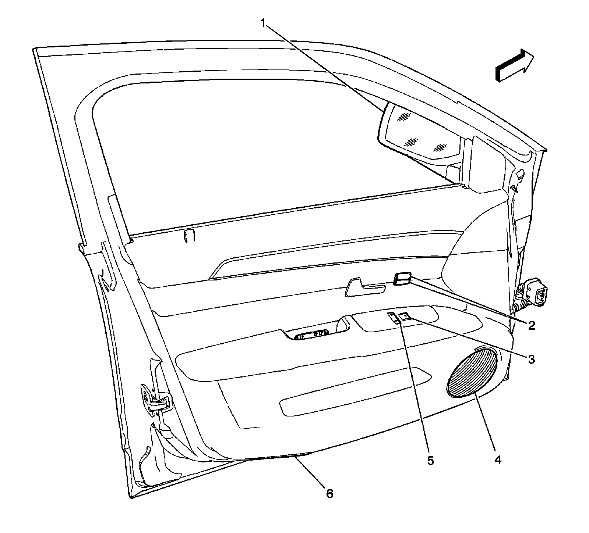

Seat Temperature Element: Locations
Door Component Views
Driver Door Components (LHD)

1 - Driver Door
2 - Heated Seat Switches (KA1)
3 - Memory Seat Switch (A45)
4 - Outside Rearview Mirror (OSRVM) Switch
5 - Driver Door Module (DDM)
6 - Window Switches
7 - Window Lockout Switch
8 - Door Lock/Unlock Switch
Driver Door Components (LHD)

1 - Driver Door Module (DDM)
2 - Heated Seat Switch - Driver (KA1)
3 - Memory Seat Switch (A45)
4 - Window Motor - Driver
5 - J501
6 - X500
7 - Speaker - Left Front Door
8 - X501
9 - X502
10 - Courtesy Lamp - Left Front Door
11 - Outside Rearview Mirror (OSRVM) - Driver Side X1
12 - Outside Rearview Mirror (OSRVM) - Driver Side X2
13 - Door Latch Assembly - Driver
Door Component Views
Driver Door Components (RHD)

1 - Outside Rearview Mirror
2 - Courtesy Lamp
3 - Driver Door Module (DDM)
4 - Door Lock Switch
5 - Window Lockout Switch
6 - Window Switches
7 - Speaker - Right Front Door
8 - Outside Rearview Mirror Switch
9 - Memory Seat Switch
10 - Heated Seat Switches
Door Component Views
Front Passenger Door Components

1 - Outside Rearview Mirror
2 - Heated Seat Switches
3 - Window Switch
4 - Speaker - Left Front Door
5 - Door Lock Switch
6 - Courtesy Lamp - Left Front Door
Passenger Compartment/Roof Component Views
Front Heated Seat Components

1 - Heated Seat Element - Driver Seat Cushion (KA1), Passenger Side Similar
2 - Heated Seat Element - Driver Seat Back (KA1), Passenger Side Similar
3 - Memory Seat Module (MSM) - (A45)
Third Row Folding Seats Components (AM0)

1 - Third Row Seats
2 - Folding Seat Rotation Motor Assembly
3 - Seat Back Load Floor Position Switch
4 - Folding Seat Recline Motor Assembly
5 - Folding Seat Horizontal Motor Assembly
6 - Rear Seat Module
7 - X311
8 - Seat Back Panel Position Switch